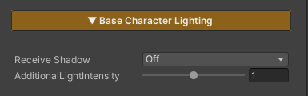

Base Character Lighting
Realtime Lighting ReceiveShadow Off
Realtime Lighting ReceiveShadow On
Baked ShadowMask Point Light Off
Baked ShadowMask Point Light On

This section controls the character’s lighting and shadow behavior.
Parameters
- Receive Shadow : Enables or disables receiving shadows cast by other objects (disabling this option does not affect the character’s ability to cast shadows onto surrounding objects)
- Additional Light Intensity : Controls the intensity of secondary lights such as Point Lights and Spot Lights; this value does not affect the main Directional Light in the scene